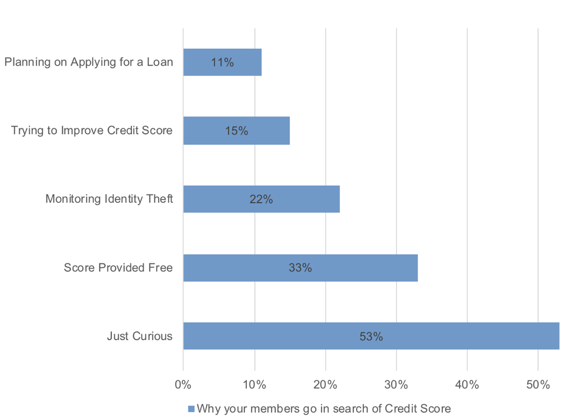
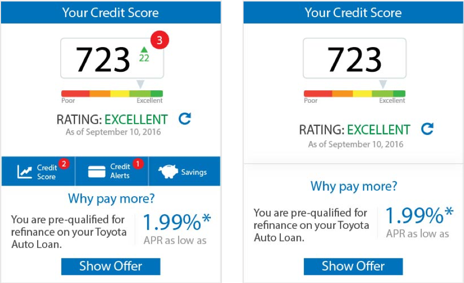

“I think I’m excited about it (product/widget). I think that’s a great thing for people to monitor their own credit this way.” — User
The point of entry for SavvyMoney users is through a credit score widget, a small real state on the online banking to display score inside online banking (OLB). Users log into their OLB, go to the “credit score widget” and sign-up / click-through to access the credit score dashboard.
There were a few challenges of building score widgets inside OLB.
Re-design the credit score widget which
The following KPI’s were defined to monitor progress of the widgets and overall engagement with the project.
Step 1: Understanding the problem space

Since this was one of the first projects, it was important to understand the business, different entry points into the SavvyMoney product and in general educate myself around credit scores. So, initial step was to speak to the subject matter experts (SME’s) across the company, explore the product and talk to partners to understand the problem space and create user-flow diagrams.
Step 2: Concepts and Information flow
Next step was to going to the drawing board and draft a few concepts and consolidate the information architecture. The major focus here was to enable the users to see their scores prominently while giving them the:
One major challenge with widget re-design was that their dimensions could vary based on the partner online banking. So it was difficult to define components or the responsive behavior for something that can take any shape or size. Also, SavvyMoney being a white label solution, another challenge was to design something neutral that can be easily customized to match the look and feel of the partner OLB.
To address these, we started with one partner at a time and tried to scale the components match their respective sizes, responsive behavior and look and feel.
Step 3: Testing and final UI designs

Once a few concepts were designed, they were tested for usability, understandability, and aesthetic appeal. The qualitative testing involved letting participants interact with widgets and asking them subjective questions around their understanding of different sections of the widget and ease of navigation to the intended information.
There was overall positive acceptance of the new widget designs and the widget tested well against the criteria of usability and satisfaction.
“You’re on your bank account and then all of a sudden your peripheral vision you see a little red alert you’re going to click and look at it more than if it was just sitting there.”- User
Based on the user and partner feedback, final designs were spec-ed out and sent for implementation.
The goal of the new designs was to increase engagement and provide relevant information the users, at a relevant time. Hence, major focus was given to convert the widgets from static score display to be more actionable and have interactive areas that take the users to the intended information in the least number of steps/interactions.
“I’m sure with (old design) i would get (to different pages) eventually but there’s not a quick link on it, (new design) quick links is very helpful. I would have to look harder to find information in (old design).” — User
The new widgets had 4 major components:
There were different variations if the widgets based on the user’s state.
This project was one of my most successful project despite being my first project to go live into the hands of hundreds and thousands of users. This project was also my credit score 101 and a stepping stone into the world of lending. I learned a lot about responsive designs, white label solutions and notification designs. I worked very closely with the development team for this project and saw a lot of inefficiencies in the way design hand-offs happened. hence, I researched and introduced sympli and invision to the team for successful hand-offs. Documenting design specs was also improved during the project.